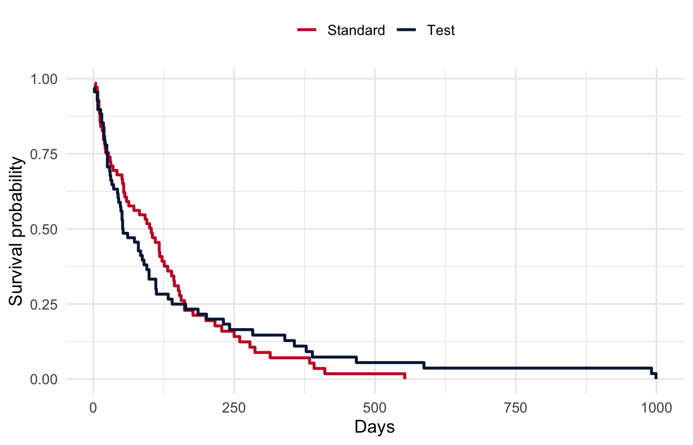
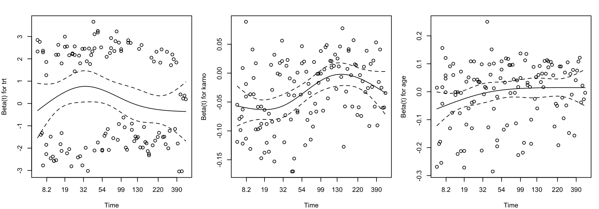

explain why a meta-analysis needs an estimate and its variance from each study, and why effect sizes rather than P values are combined;
compute the risk difference, risk ratio, odds ratio and number needed to treat, with their standard errors, by hand and with epiR and metafor;
explain when the odds ratio and risk ratio diverge, why the odds ratio is not collapsible, and how relative and absolute measures behave as baseline risk changes;
compute mean differences and standardised mean differences (Cohen’s d, Hedges’ g), handle paired designs, and pool correlations on Fisher’s z scale;
interpret a hazard ratio, check the proportional hazards assumption, and recognise when a single hazard ratio misleads;
choose and report an effect measure appropriate to the outcome and the decision.
R packages:dplyr, tidyr, ggplot2, metafor, epiR, survival, knitr.
Before results can be combined across studies they need a common currency: a statistic that captures the direction and size of the effect and can be computed from every study. Section 3.5 showed what to extract. This chapter develops the measures themselves: how they are computed, how precisely they are estimated, how they behave, and how to choose among them. Chapter 9 shows how they are pooled.
8.1 What a meta-analysis needs from each study
Most meta-analytic methods need just two numbers from each study: an estimate of the effect and its variance (or standard error). Everything else about a study, its size, its design, its raw data, enters only through these two quantities, and the variance determines the study’s weight. This “two-stage” approach treats each study’s estimate as normally distributed with a known variance. That works well for large studies and is approximate for small studies, rare events and zero cells; methods that work directly from the counts (Mantel-Haenszel, Peto, binomial likelihoods) are covered in Section 9.6.
The choice of measure is not a technicality. It determines what question the meta-analysis answers, whether pooling across studies is coherent, and how the result can be communicated.
8.1.1 Estimates, not P values
A P value mixes two things: the size of an effect and the precision with which it was measured. For an estimate \(d\) with standard error \(SE_d\), the test statistic is \(Z = d/SE_d\), and \(|Z| > 1.96\) exactly when the 95% confidence interval \(d \pm 1.96\,SE_d\) excludes the null. Testing and estimation answer the same question, but only the estimate keeps the size and the precision apart.
Code
two_studies <-data.frame(study =c("A", "B"), effect =c(0.50, 0.50), se =c(0.20, 0.05)) |>mutate(z = effect / se, p =2*pnorm(-abs(z)))kable(two_studies, digits =c(0, 2, 2, 1, 4))
study
effect
se
z
p
A
0.5
0.20
2.5
0.0124
B
0.5
0.05
10.0
0.0000
The two studies estimate exactly the same effect; study B is simply larger. Their P values cannot sensibly be compared or combined, but their estimates and standard errors can. That is the logic of meta-analysis.
8.2 Binary outcomes
All binary effect measures come from the same 2×2 table (Table 8.1).
Table 8.1: Notation for a two-arm trial with a binary outcome.
Ratio measures are skewed, so they are analysed on the log scale, where their sampling distributions are approximately normal. Their variances come from the delta method, which approximates the variance of a function \(g(X)\) by \([g'(E[X])]^2\,\mathrm{Var}(X)\):
The same results come from packages, which is how they are computed in practice. epiR::epi.2by2() works from the 2×2 table, and metafor::escalc() returns each study’s estimate yi (on the log scale for ratios) and its variance vi, ready for pooling:
sapply(c(RD ="RD", RR ="RR", OR ="OR"), function(m)unlist(escalc(measure = m, ai = a, bi = b, ci = c, di = d)[, c("yi", "vi")]))
RD RR OR
yi -0.150000 -0.6931472 -0.8873032
vi 0.003375 0.0800000 0.1260504
Hand calculation builds intuition and lets you check a package’s output, for example when its default continuity correction for zero cells differs from what you expected.
8.2.2 Risk ratio or odds ratio?
In the example the risk falls from 30% to 15%: the RR is 0.50, a 50% reduction in risk, while the OR is 0.41, a 59% reduction in odds. Both are correct, but they describe different quantities, and an OR read as if it were an RR overstates the effect. The two are close only when the outcome is rare in both groups; as a rule of thumb, they diverge noticeably once risks exceed about 10% (1). Given the control risk \(p_0\), an OR can be converted to the corresponding RR:
\[ RR = \frac{OR}{1 - p_0 + p_0 \times OR}. \]
The OR has properties that explain its popularity in meta-analysis:
It is symmetric in the outcome. The OR for “event” is the reciprocal of the OR for “no event”, so it does not matter which way the outcome is coded. The RR lacks this property: here the RR for an event is 0.50, but the RR for remaining event-free is 1.21, not 2.00, and a meta-analysis of RRs can give different conclusions depending on which outcome is analysed (2).
It is bounded sensibly. Any OR is compatible with any baseline risk, whereas an RR of 2 is impossible if the control risk exceeds 50%.
It is what case-control studies and logistic regression estimate.
The RR is easier to interpret and more often what readers think they are being told. Either is defensible; the choice should be pre-specified, and the result should always be translated into absolute terms.
8.2.3 The odds ratio is not collapsible
A less familiar property of the OR matters for meta-analysis. Suppose a trial enrols equal numbers of low-risk and high-risk patients, with control risks of 20% and 60%, and treatment doubles the odds of the event in both groups. There is no confounding: risk group is balanced by randomisation.
OR RR_low RR_high
Within each stratum 2.00 1.67 1.25
Whole trial 1.77 1.35 1.35
The OR is 2 in each stratum but 1.77 in the trial as a whole, even though nothing is confounded. The OR is non-collapsible: the marginal (unadjusted) OR is not an average of the conditional ones. The RR is collapsible: the whole-trial RR of 1.35 lies between the stratum RRs. Hazard ratios are also non-collapsible. Two practical consequences follow. First, in a randomised trial, adjusting an OR or HR for prognostic covariates changes the estimate even without confounding, because the adjusted and unadjusted analyses estimate different quantities; the adjusted estimate is further from 1. Second, a meta-analysis that mixes adjusted and unadjusted ORs or HRs combines estimates of different quantities, and the review should say which it used and why.
8.2.4 Absolute effects: risk difference and NNT
The risk difference is the measure that matters for decisions: how many events a treatment prevents (or causes) per 100 or 1000 people treated. Its reciprocal is the number needed to treat (NNT), here 1/0.15 ≈ 7. Conventionally the NNT is rounded up. Two cautions apply. The NNT refers to a specific follow-up period, which must be stated. And when the confidence interval for the RD includes zero, the interval for the NNT runs through infinity, from a number needed to treat to benefit to a number needed to harm, so it should be reported with care, or the RD reported instead.
The absolute effect depends on baseline risk. With the same RR of 0.5:
If a treatment’s effect were constant on the RR scale, studies in populations with different baseline risks would show different RDs and ORs (Figure 8.1). The RD would then appear heterogeneous across studies purely because baseline risks differ.
Figure 8.1: Risk difference and odds ratio when the risk ratio is constant at 0.50, as baseline (control) risk varies.
Which measure is actually constant is an empirical question. In an empirical comparison across meta-analyses from 551 systematic reviews, the RR and OR were on average more consistent across trials than the RD, with no difference on average between the RR and the OR (2). This supports the standard workflow, which the summary-of-findings tables of Section 6.10 follow:
pool on a relative scale (RR or OR);
choose a baseline risk that represents the population of interest, which need not be the trials’ average;
convert: \(RD = p_0 \times (RR - 1)\), and report the NNT for a stated period;
report both: the relative effect for the synthesis, the absolute effect for the decision.
A relative effect alone is not an answer
A pooled RR or OR without a baseline risk tells clinicians the direction of an effect but not its size for their patients. An RR of 0.5 means an NNT of 4 or of 100, depending on whom you treat.
8.3 Continuous outcomes
8.3.1 Mean difference
When all studies measure the outcome on the same scale (blood pressure in mmHg, HbA1c in %), the mean difference (MD), \(\bar X_1 - \bar X_2\), is the natural measure: its units are clinically meaningful. Its variance can be estimated allowing different SDs in the two groups, \(S_1^2/n_1 + S_2^2/n_2\), or from a pooled SD, \(S_p^2(1/n_1 + 1/n_2)\), which assumes equal population SDs. metafor::escalc() uses the first by default. The two coincide when the groups are the same size and differ otherwise:
Paired designs. In crossover trials and before-after comparisons, each participant contributes both measurements. The SD of the within-person differences is \(S_{\text{diff}} = \sqrt{S_1^2 + S_2^2 - 2rS_1S_2}\), where \(r\) is the correlation between the two measurements, and \(SE = S_{\text{diff}}/\sqrt n\):
Code
paired <- tibble::tibble(r =c(0, 0.5, 0.9, 0.99)) |>mutate(sd_diff =sqrt(10^2+10^2-2* r *10*10), se_md = sd_diff /sqrt(50))kable(paired, digits =2, col.names =c("Correlation r", "SD of differences", "SE of MD"),caption ="Standard error of a paired mean difference with SDs of 10 and n = 50.")
Standard error of a paired mean difference with SDs of 10 and n = 50.
Correlation r
SD of differences
SE of MD
0.00
14.14
2.00
0.50
10.00
1.41
0.90
4.47
0.63
0.99
1.41
0.20
The stronger the correlation, the more between-person variation the pairing removes. Papers often report the two means and SDs but not the correlation; treating paired data as independent (\(r = 0\)) overstates the uncertainty, giving the study too little weight. If \(r\) is unknown, borrow it from a similar study and check the sensitivity of the results.
8.3.2 Standardised mean difference
When studies measure the same construct on different scales (different depression questionnaires or pain scales), the MDs cannot be pooled. The standardised mean difference (SMD) divides each by a standard deviation, putting all studies in SD units:
Cohen’s d uses the pooled SD: \(d = (\bar X_1 - \bar X_2)/S_p\), with \(\mathrm{Var}(d) \approx \frac{n_1 + n_2}{n_1 n_2} + \frac{d^2}{2(n_1 + n_2)}\).
Hedges’ g corrects the small-sample upward bias of d: \(g = d \times \left(1 - \frac{3}{4(n_1 + n_2) - 9}\right)\). This is the usual choice in meta-analysis and what escalc(measure = "SMD") returns.
Glass’s Δ divides by the control-group SD alone, appropriate when the intervention may change the variability of the outcome.
Cohen’s benchmarks of 0.2, 0.5 and 0.8 for small, medium and large effects (3) were offered as rough guides for the behavioural sciences and are no substitute for clinical judgement. The SMD has other drawbacks. It depends on how variable the study population is, so the same treatment effect gives a larger SMD in a homogeneous trial population than in a diverse one. It is hard to interpret clinically. And it should not be used when all studies share a scale. A pooled SMD can be translated back into the units of a familiar instrument by multiplying it by a typical SD of that instrument in the relevant population.
8.3.3 Correlations: Fisher’s z
Correlations have a skewed sampling distribution whose variance depends on the true correlation, so they are pooled on Fisher’s z scale, \(z = \tfrac12 \ln\frac{1+r}{1-r}\), with variance approximately \(1/(n-3)\), and back-transformed for presentation. The dat.molloy2014 dataset in metafor contains the correlations between conscientiousness and medication adherence in 16 studies (4):
Code
molloy <-escalc(measure ="ZCOR", ri = ri, ni = ni, data = dat.molloy2014,slab =paste(authors, year, sep =", "))res_molloy <-rma(yi, vi, data = molloy)predict(res_molloy, transf = transf.ztor)
pred ci.lb ci.ub pi.lb pi.ub
0.1488 0.0878 0.2087 -0.0371 0.3248
Figure 8.2: Correlation between conscientiousness and medication adherence in 16 studies, pooled on Fisher’s z scale and back-transformed (4).
The pooled correlation is 0.15 (95% CI 0.09 to 0.21), with substantial heterogeneity (I² = 62%): the prediction interval, -0.04 to 0.32, includes no association at all.
8.4 Time-to-event outcomes
8.4.1 The hazard ratio
The hazard at time \(t\) is the instantaneous event rate among those still event-free at \(t\). The hazard ratio (HR) compares the hazards in two groups, \(HR(t) = h_1(t)/h_0(t)\). Its advantages over a risk ratio at a fixed time are that it uses all the follow-up and handles censoring. Reporting a single HR, however, assumes proportional hazards: that the ratio is constant over time.
The veteran dataset in the survival package comes from a randomised trial of standard versus test chemotherapy in advanced lung cancer (5). We fit Cox models without and with adjustment for performance status (Karnofsky score) and age:
Code
vet <- survival::veteran |>mutate(trt =factor(trt, levels =1:2, labels =c("Standard", "Test")))fit_unadj <-coxph(Surv(time, status) ~ trt, data = vet)fit_adj <-coxph(Surv(time, status) ~ trt + karno + age, data = vet)rbind(unadjusted =summary(fit_unadj)$conf.int["trtTest", c(1, 3, 4)],adjusted =summary(fit_adj)$conf.int["trtTest", c(1, 3, 4)]) |>round(2)
The HR moves from 1.02 to 1.21 with adjustment. In a randomised trial this is not removal of confounding: partly it reflects chance imbalance in performance status, and partly the non-collapsibility of the HR (Section 8.2.3). Neither estimate is statistically significant.
8.4.2 Checking proportional hazards
Kaplan-Meier curves make no assumption about proportionality and should be examined before any HR is trusted (Figure 8.3).
Code
km <-survfit(Surv(time, status) ~ trt, data = vet)tibble::tibble(time = km$time, surv = km$surv,arm =rep(sub("trt=", "", names(km$strata)), km$strata)) |>ggplot(aes(time, surv, colour = arm)) +geom_step(linewidth =1) +scale_colour_manual(values =c(Standard ="#C8102E", Test ="#041E42"), name =NULL) +labs(x ="Days", y ="Survival probability") +theme(legend.position ="top")

Figure 8.3: Kaplan-Meier survival curves for standard and test chemotherapy in the veteran lung cancer trial. The curves cross.
The test arm does worse early and better late, so the curves cross between about 150 and 200 days. A formal check uses scaled Schoenfeld residuals: at each event time, the difference between the covariate value of the person who had the event and its expected value among those at risk. Under proportional hazards these show no trend with time.
Code
zph <-cox.zph(fit_adj)zph
chisq df p
trt 0.284 1 0.59439
karno 12.003 1 0.00053
age 2.100 1 0.14735
GLOBAL 19.102 3 0.00026
Code
par(mfrow =c(1, 3), mar =c(4, 4, 2, 1))plot(zph)

Figure 8.4: Scaled Schoenfeld residuals against time for each covariate in the adjusted Cox model, with a smoothed trend and ±2 SE band. A trend indicates a non-proportional effect.
There is no evidence against proportional hazards for treatment (P = 0.59), but strong evidence for Karnofsky score (P < 0.001): the prognostic effect of performance status fades with time. A model that assumes it is constant is misspecified, and the treatment HR from it should be interpreted with that in mind. The test is not perfectly sensitive, and the crossing curves are a warning that a single treatment HR summarises an effect that changes sign.
When hazards are not proportional, alternatives include reporting HRs for separate periods, survival curves, or the restricted mean survival time (RMST), the area under the survival curve up to a chosen time, which is the average event-free time over that period (6):
Over 400 days, patients on standard chemotherapy lived on average 121 days and those on the test drug 116 days, a difference of 5 days, which is easy to interpret and does not depend on proportional hazards.
8.4.3 The hazards of hazard ratios
The Women’s Health Initiative randomised trial of combined hormone therapy reported an overall HR for coronary heart disease of 1.24 after an average of 5.2 years (7). (8) used the trial’s year-by-year results (Figure 8.5) to show two problems with HRs, even in a randomised trial with no confounding.
Figure 8.5: Hazard ratios for coronary heart disease by year of follow-up in the Women’s Health Initiative trial of estrogen plus progestin. Data from Table 2 of (7); the dashed line is the overall HR of 1.24.
First, the overall HR depends on the length of follow-up. It is a weighted average of period-specific HRs that fall from 1.81 in year 1 to 0.7 after year 5. A trial stopped after one year would have reported an 80% increase in risk; a much longer trial might have reported almost none.
Second, the period-specific HRs carry a built-in selection bias. The HR in year 6 is computed only among women who were still free of coronary disease at the start of year 6. If women vary in their susceptibility, hormone therapy removes the most susceptible women from the treated arm early, so the survivors in that arm are less susceptible than those in the placebo arm. This differential depletion of susceptibles can push later HRs below 1 even if the treatment is never protective for anyone.
Hernán’s recommendation is to report survival (or cumulative risk) curves, with adjustment where needed, which also give absolute risks directly. In year 1 the annual rates were 0.50% and 0.29%: an HR of 1.8, but an absolute difference of about two events per 1000 women per year.
8.4.4 Other time-to-event measures
For rare events over short periods the HR, RR and OR are close; with common events and long follow-up they diverge. When participants can have the outcome more than once (hospitalisations, exacerbations, seizures), an analysis of time to first event discards information, and a rate ratio, events per person-time in each group, modelled with Poisson or negative binomial regression to allow for overdispersion, is more appropriate. Heart failure trials increasingly report total (first and recurrent) hospitalisations this way. Rate ratios and hazard ratios estimate different quantities and should not be pooled together.
8.5 Choosing and reporting an effect measure
Table 8.2: Choosing an effect measure.
Outcome
Measure
Use when
Caution
Binary
Risk ratio
Trials and cohorts; intuitive relative effect
Depends on which outcome is analysed; bounded by baseline risk
Overstates the RR when events are common; not collapsible
Binary
Risk difference, NNT
Decisions and communication
Heterogeneous across baseline risks; state the time period
Continuous, same scale
Mean difference
All studies use the same instrument
Check variance assumption for unequal groups
Continuous, different scales
Standardised mean difference (Hedges’ g)
Same construct, different instruments
Hard to interpret; depends on population variability
Correlation
Fisher’s z, back-transformed to r
Associations between continuous variables
Back-transform before reporting
Time to event
Hazard ratio
Survival, time to first event
Proportional hazards; depends on follow-up length; not collapsible
Time to event
Restricted mean survival time
Non-proportional hazards
Depends on the chosen time horizon
Recurrent events
Rate ratio
Hospitalisations, exacerbations
Overdispersion
Good practice in reporting:
Pre-specify the primary effect measure in the protocol, and justify it rather than adopting whatever the studies reported.
For binary outcomes, report both relative and absolute effects, with the baseline risk on which the absolute effect is based and the time period of the NNT.
Report confidence intervals, and back-transform log-scale estimates for presentation.
Say whether adjusted or unadjusted estimates were pooled, and why.
For time-to-event outcomes, check proportional hazards, state the follow-up period, and show survival curves where possible.
Key points
A meta-analysis combines, for each study, an estimate and its variance; effect sizes, not P values, are the currency.
Ratio measures are analysed on the log scale; their variances come from the delta method.
The OR approximates the RR only for rare outcomes; it is symmetric in the outcome coding but not collapsible, so adjusted and unadjusted ORs (and HRs) estimate different quantities.
Relative effects are usually more consistent across studies than risk differences; pool on a relative scale and convert to absolute effects for a stated baseline risk.
Use the MD when studies share a scale and the SMD only when they do not; account for pairing in paired designs.
A single HR assumes proportional hazards and depends on the length of follow-up; check the assumption, and prefer survival curves or RMST when it fails.
Exercises
For the four SGLT2 inhibitor trials of Section 6.2, compute the RR, OR and RD for the composite outcome in each trial with escalc(). Which measure varies most across trials, relative to its standard error?
Using the OR-to-RR conversion, find the control risk at which an OR of 0.5 corresponds to an RR of 0.6.
Extend noncollapsible to a trial with three equally sized strata with control risks of 10%, 40% and 70%. What is the marginal OR when the conditional OR is 3?
In paired-r, how large must r be for the paired SE to be half the unpaired SE?
For the veteran trial, compute the RMST at 200 and at 600 days. How and why does the difference between arms change?
Read the WHI report and recompute the absolute difference in coronary events per 1000 women for each year of follow-up from Figure 8.5. Does the absolute picture tell the same story as the HRs?
Further reading
(9): Chapter 6 of the Cochrane Handbook, on choosing effect measures and computing estimates.
(2) on the empirical properties of RR, OR and RD in meta-analysis; (1) on odds and odds ratios.
Kalbfleisch JD, Prentice RL. The statistical analysis of failure time data. 2nd ed. Hoboken, NJ: Wiley; 2002.
6.
Royston P, Parmar MKB. Restricted mean survival time: An alternative to the hazard ratio for the design and analysis of randomized trials with a time-to-event outcome. BMC Medical Research Methodology [Internet]. 2013;13:152. Available from: https://pmc.ncbi.nlm.nih.gov/articles/PMC3922847/
Higgins JPT, Li T, Deeks JJ. Chapter 6: Choosing effect measures and computing estimates of effect. In: Cochrane handbook for systematic reviews of interventions [Internet]. Cochrane; 2024. Available from: https://training.cochrane.org/handbook/current/chapter-06
10.
Borenstein M, Hedges LV, Higgins JPT, Rothstein HR. Introduction to meta-analysis. Chichester: Wiley; 2009.